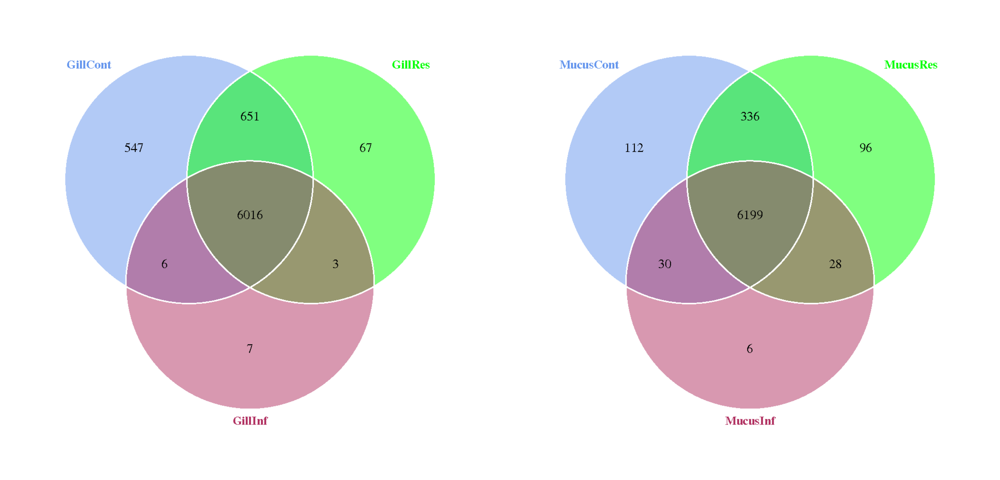

Novogene 16S Amplicon Analysis Report
| Contract Information | Contract Content |
|---|---|
| Contract_No | H204SCXXXXXXXX |
| Batch_ID | X204SCXXXXXXXX-Z01-F001 |
| Report_Time | 20XX-XX-XX |
1 Overview
16S ribosomal RNA (rRNA) is a component of the prokaryotic 30S ribosomal subunit. It contains nine hypervariable regions (V1-V9) and the length of these hypervariable regions range from approximately 30 to 100 base pairs. The degree of conservation in prokaryotic 16s rRNA hypervariable region varies across bacterial species, where higher gene similarity is found between organism of closely related species. Currently, 16S rRNA gene is widely used in archaeal and bacteria phylogenetic analysis and classification[1,2,3] .
Amplicon sequencing of the 16S ribosomal RNA gene is widely recognized as a reliable and effective technique for classifying bacteria. The gene includes nine variable regions, labeled V1 to V9, interspaced with sequences that maintain high consistency across different bacterial groups. The advancement of high-throughput sequencing technology has dramatically increased the number of microbial community studies based on 16S rRNA genes. Traditional short-read sequencing platforms fail to produce reads that span the entire length of the 16S rRNA gene , leading to targeted sequencing of certain regions; this approach frequently results in taxonomic classification uncertainties. However, PacBio Revio sequencing systems have addressed these limitations, achieving long and accurate HiFi reads using the Circular Consensus Sequencing (CCS) method.Full-length 16S rRNA sequencing with PacBio technology covers the entire 1.5 kb 16S gene with high accuracy, allowing for species- and strain-level identification in microbiome studies.
1.1 Experimental Workflow
The quality of data from the third generation sequencing (TGS) technology is directly influenced by sample handling procedures, which include Quality Control (PCR amplification), library preparation, and sequencing. The data quality further impacts the analysis result. To ensure the accuracy and reliability of sequencing data, quality control (QC) is performed at each step of the procedure. The flowchart is as follows:
Fig 1.1 Experimental Workflow
1.2 Library Construction, Quality Control and Sequencing
To prepare Kinnex libraries from 16S rRNA amplicons. After pooling the barcoded 16S PCR amplicons, Kinnex adapters are added to facilitate the concatenation of these amplicons into longer sequences. Kinnex array formation, involves treating the Kinnex PCR products with Kinnex enzyme, ligase, and barcoded Kinnex terminal adapters to assemble the 16S segments into a linear array. Lastly, a final cleanup with SMRTbell cleanup beads is performed to ensure the library is clean and pure.The experimental procedures of DNA library preparation are shown:
Fig 1.2 Workflow of library construction
1.3 Analysis Workflow
The PacBio BAM file is demultiplexed according to barcode and filtered to get clean data. Based on clean data, we use DADA2[4,5] to reduce noise. For the obtained ASVs, on the one hand, the representative sequence of each ASV is annotated to obtain the corresponding species information and the abundance distribution based on the species. Then, analyze the abundance and calculate the alpha diversity of ASVs to obtain the species richness and uniformity information of the samples. On the other hand, multiple sequence alignment of ASVs is performed and phylogenetic trees are constructed. Through dimensionality reduction analysis (PCoA, PCA, NMDS) and sample clustering tree display, the differences in community structure between different samples or groups can be explored. In order to further explore the differences in community structure in different groups, statistical analysis methods such as T-test, MetagenomeSeq, LEfSe, etc. are used to test the significance of differences in species composition and community structure of groups. The annotation results of the amplicons can also be associated with the corresponding functional databases, and the PICRUSt2 software can be used to predict and analyze the function of the microbial community in the ecological sample. The bioinformatic analysis workflow after obtaining the sequencing data is shown as follows:
Notably, DADA2 method for ASV inference requires high-quality data and deep sequencing depth (recommend at least 10k CCS reads). For samples with high diversity, such as environmental samples, higher sequencing depth is required. If the final data does not meet the requirements for the DADA2 method, we could switch to another approach upon request, e.g. deblur or OTU (97% similarity clustering).
Fig 1.3 Analysis Workflow
Note: If the number of samples is less than 3, β-diversity cannot be carried out. If there are less than 2 groups and less than 3 biological repetitions in each group, Difference of alpha diversity indices between groups, Community differences analysis (Species variance statistice, Community variance statistice) cannot be carried out. Environmental factor correlation analysis requires the customer to provide environmental factor information.
2 Data Quality Control
After filtering the data, quality control is performed on the clean reads.The statistical results are shown in the following table:
Table 2.1 Statistical results of data processing
| Sample | NovoID | Clean reads | Clean data | AvgLen(nt) | Q20(%) | Q30(%) | GC(%) |
|---|---|---|---|---|---|---|---|
| Gi00C1 | FKDN240066812-1A | 16580 | 23923577 | 1443 | 98.22 | 95.68 | 51.09 |
| Gi00C2 | FKDN240066813-1A | 11790 | 17594401 | 1493 | 97.58 | 94.26 | 51.59 |
| Gi00C3 | FKDN240066814-1A | 16965 | 25012009 | 1475 | 98.05 | 95.29 | 49.09 |
| Gi00C4 | FKDN240066815-1A | 18481 | 27080431 | 1466 | 98.11 | 95.48 | 54.08 |
| Gi00C5 | FKDN240066816-1A | 16945 | 25139255 | 1484 | 98.08 | 95.29 | 51.53 |
| Gi0C1 | FKDN240066842-1A | 16290 | 23844066 | 1464 | 98.09 | 95.38 | 52.33 |
| Gi0C2 | FKDN240066843-1A | 17699 | 25855602 | 1461 | 97.77 | 94.63 | 54.37 |
| Gi0C3 | FKDN240066844-1A | 17098 | 24884479 | 1456 | 97.3 | 93.51 | 53.74 |
| Gi0C4 | FKDN240066845-1A | 20250 | 29379594 | 1451 | 97.86 | 94.83 | 49.68 |
| Gi0C5 | FKDN240066846-1A | 17980 | 26370494 | 1467 | 97.82 | 94.75 | 53.25 |
| Gi0I1 | FKDN240066817-1A | 21558 | 31647260 | 1469 | 98.17 | 95.62 | 54.28 |
| Gi0I2 | FKDN240066818-1A | 17331 | 25312642 | 1461 | 97.81 | 94.7 | 54.62 |
| Gi0I3 | FKDN240066819-1A | 18062 | 26430390 | 1464 | 98.09 | 95.44 | 55.03 |
| Gi0I4 | FKDN240066820-1A | 18011 | 26347852 | 1463 | 98.15 | 95.59 | 54.77 |
| Gi0I5 | FKDN240066821-1A | 16394 | 23931154 | 1460 | 98.06 | 95.37 | 54.82 |
| Gi10C1 | FKDN240066857-1A | 16040 | 23723424 | 1480 | 97.98 | 95.14 | 54.23 |
| Gi10C2 | FKDN240066858-1A | 18421 | 26658721 | 1448 | 97.88 | 94.86 | 51.46 |
| Gi10C3 | FKDN240066859-1A | 21096 | 30719270 | 1457 | 97.76 | 94.6 | 51.9 |
| Gi10C4 | FKDN240066860-1A | 17357 | 25954469 | 1496 | 98.31 | 96.02 | 53.11 |
| Gi10C5 | FKDN240066861-1A | 16656 | 24566076 | 1475 | 98.08 | 95.38 | 53.69 |
| Gi10I1 | FKDN240066832-1A | 17660 | 25767913 | 1460 | 97.81 | 94.73 | 54.03 |
| Gi10I10 | FKDN240066841-1A | 22144 | 32315229 | 1460 | 97.77 | 94.62 | 52.92 |
| Gi10I2 | FKDN240066833-1A | 16399 | 23968795 | 1462 | 98.01 | 95.24 | 54.14 |
| Gi10I3 | FKDN240066834-1A | 17643 | 25902205 | 1469 | 97.67 | 94.46 | 52.32 |
| Gi10I4 | FKDN240066835-1A | 17776 | 26031338 | 1465 | 98.05 | 95.33 | 54.19 |
| Gi10I5 | FKDN240066836-1A | 17335 | 25527019 | 1473 | 98.08 | 95.42 | 54.28 |
| Gi10I6 | FKDN240066837-1A | 16500 | 24195927 | 1467 | 98.1 | 95.44 | 53.7 |
| Gi10I7 | FKDN240066838-1A | 21445 | 31776519 | 1482 | 98.04 | 95.27 | 53.26 |
| Gi10I8 | FKDN240066839-1A | 18443 | 27167094 | 1474 | 98.47 | 96.33 | 52.58 |
| Gi10I9 | FKDN240066840-1A | 17578 | 26301513 | 1497 | 98.39 | 96.13 | 52.42 |
| Gi4C1 | FKDN240066847-1A | 18816 | 27395782 | 1456 | 97.77 | 94.64 | 52.49 |
| Gi4C2 | FKDN240066848-1A | 18598 | 27047156 | 1455 | 97.77 | 94.63 | 54.44 |
| Gi4C3 | FKDN240066849-1A | 17429 | 25343663 | 1455 | 97.87 | 94.85 | 52.1 |
| Gi4C4 | FKDN240066850-1A | 16494 | 24101915 | 1462 | 97.8 | 94.7 | 53.86 |
| Gi4C5 | FKDN240066851-1A | 14784 | 21527002 | 1457 | 97.93 | 94.95 | 52.06 |
| Gi4I1 | FKDN240066822-1A | 19876 | 28942034 | 1457 | 98.54 | 96.45 | 52.13 |
| Gi4I2 | FKDN240066823-1A | 16912 | 24508836 | 1450 | 98.5 | 96.35 | 51.92 |
| Gi4I3 | FKDN240066824-1A | 18765 | 27423872 | 1462 | 97.78 | 94.66 | 54.56 |
| Gi4I4 | FKDN240066825-1A | 16921 | 24701791 | 1460 | 97.8 | 94.72 | 54.58 |
| Gi4I5 | FKDN240066826-1A | 16146 | 23449009 | 1453 | 98.52 | 96.42 | 52.03 |
| Gi7C1 | FKDN240066852-1A | 15878 | 23184916 | 1461 | 97.79 | 94.68 | 54.49 |
| Gi7C2 | FKDN240066853-1A | 17333 | 25313946 | 1461 | 97.8 | 94.71 | 53.89 |
| Gi7C3 | FKDN240066854-1A | 18427 | 26951937 | 1463 | 97.8 | 94.71 | 54.2 |
| Gi7C4 | FKDN240066855-1A | 17062 | 24951582 | 1463 | 97.72 | 94.55 | 53.6 |
| Gi7C5 | FKDN240066856-1A | 17166 | 24976968 | 1456 | 97.79 | 94.69 | 54.11 |
| Gi7I1 | FKDN240066827-1A | 18383 | 26929074 | 1465 | 97.88 | 94.88 | 53.7 |
| Gi7I2 | FKDN240066828-1A | 20569 | 30127354 | 1465 | 98.18 | 95.62 | 53.55 |
| Gi7I3 | FKDN240066829-1A | 18529 | 26900119 | 1452 | 98.33 | 95.91 | 51.66 |
| Gi7I4 | FKDN240066830-1A | 16756 | 24301028 | 1451 | 98.26 | 95.73 | 51.95 |
| Gi7I5 | FKDN240066831-1A | 17202 | 25101353 | 1460 | 98.01 | 95.24 | 54.21 |
| M00C1 | FKDN240066862-1A | 18589 | 27038502 | 1455 | 98.51 | 96.4 | 53.31 |
| M00C2 | FKDN240066863-1A | 18743 | 27304440 | 1457 | 98.51 | 96.42 | 53.08 |
| M00C3 | FKDN240066864-1A | 17950 | 26164426 | 1458 | 98.5 | 96.41 | 52.76 |
| M00C4 | FKDN240066865-1A | 18190 | 26151327 | 1438 | 98.54 | 96.48 | 52.6 |
| M00C5 | FKDN240066866-1A | 17732 | 25580835 | 1443 | 98.58 | 96.56 | 51.56 |
| M0C1 | FKDN240066892-1A | 16969 | 24541192 | 1447 | 98.52 | 96.45 | 51.61 |
| M0C2 | FKDN240066893-1A | 18258 | 26430020 | 1448 | 98.49 | 96.35 | 51.49 |
| M0C3 | FKDN240066894-1A | 15184 | 22053438 | 1453 | 98.13 | 95.53 | 53.06 |
| M0C4 | FKDN240066895-1A | 16885 | 24446066 | 1448 | 98.23 | 95.71 | 51.5 |
| M0C5 | FKDN240066896-1A | 17650 | 25474112 | 1444 | 98.54 | 96.47 | 51.07 |
| M0I1 | FKDN240066867-1A | 17677 | 25885787 | 1465 | 98.49 | 96.36 | 54.27 |
| M0I2 | FKDN240066868-1A | 18322 | 26670854 | 1456 | 98.47 | 96.36 | 54.63 |
| M0I3 | FKDN240066869-1A | 16970 | 24788281 | 1461 | 98.49 | 96.37 | 54.06 |
| M0I4 | FKDN240066870-1A | 18157 | 26560576 | 1463 | 98.52 | 96.45 | 54.28 |
| M0I5 | FKDN240066871-1A | 20708 | 30361062 | 1467 | 98.45 | 96.29 | 54.08 |
| M10C1 | FKDN240066907-1A | 18032 | 25973691 | 1441 | 98.53 | 96.43 | 52.84 |
| M10C2 | FKDN240066908-1A | 17497 | 25218938 | 1442 | 98.55 | 96.48 | 52.29 |
| M10C3 | FKDN240066909-1A | 16537 | 23856761 | 1443 | 98.58 | 96.54 | 52.26 |
| M10C4 | FKDN240066910-1A | 16937 | 24428251 | 1443 | 98.29 | 95.7 | 52.44 |
| M10C5 | FKDN240066911-1A | 16221 | 23362368 | 1441 | 98.5 | 96.39 | 52.26 |
| M10I1 | FKDN240066882-1A | 16440 | 23736536 | 1444 | 97.3 | 93.46 | 52.53 |
| M10I10 | FKDN240066891-1A | 16398 | 23691866 | 1445 | 98.19 | 95.47 | 51.85 |
| M10I2 | FKDN240066883-1A | 18171 | 26196864 | 1442 | 98.49 | 96.35 | 52.09 |
| M10I3 | FKDN240066884-1A | 17747 | 25654410 | 1446 | 98.48 | 96.34 | 52.26 |
| M10I4 | FKDN240066885-1A | 18492 | 26893168 | 1455 | 98.3 | 95.93 | 51.53 |
| M10I5 | FKDN240066886-1A | 16886 | 24487279 | 1451 | 98.44 | 96.25 | 51.97 |
| M10I6 | FKDN240066887-1A | 17952 | 26058647 | 1452 | 98.37 | 96.09 | 51.77 |
| M10I7 | FKDN240066888-1A | 18093 | 26220280 | 1450 | 98.41 | 96.16 | 52.12 |
| M10I8 | FKDN240066889-1A | 16564 | 24060989 | 1453 | 98.23 | 95.79 | 51.46 |
| M10I9 | FKDN240066890-1A | 20253 | 29347667 | 1450 | 98.26 | 95.64 | 51.62 |
| M4C1 | FKDN240066897-1A | 18692 | 26955312 | 1443 | 98.49 | 96.36 | 51.24 |
| M4C2 | FKDN240066898-1A | 18399 | 26468917 | 1439 | 98.58 | 96.55 | 51.3 |
| M4C3 | FKDN240066899-1A | 16384 | 23885189 | 1458 | 98.11 | 95.5 | 53.81 |
| M4C4 | FKDN240066900-1A | 17954 | 25961745 | 1447 | 98.55 | 96.48 | 51.66 |
| M4C5 | FKDN240066901-1A | 16389 | 23690907 | 1446 | 98.53 | 96.45 | 51.41 |
| M4I1 | FKDN240066872-1A | 19485 | 29028873 | 1490 | 97.95 | 95.1 | 53.66 |
| M4I2 | FKDN240066873-1A | 18629 | 26766580 | 1437 | 98.52 | 96.41 | 51.93 |
| M4I3 | FKDN240066874-1A | 17372 | 25054696 | 1443 | 98.47 | 96.33 | 52.21 |
| M4I4 | FKDN240066875-1A | 16400 | 23550927 | 1437 | 98.55 | 96.47 | 52.06 |
| M4I5 | FKDN240066876-1A | 17716 | 25500131 | 1440 | 98.54 | 96.47 | 51.43 |
| M7C1 | FKDN240066902-1A | 17958 | 25887241 | 1442 | 98.58 | 96.56 | 51.38 |
| M7C2 | FKDN240066903-1A | 17676 | 25468518 | 1441 | 98.55 | 96.5 | 52.5 |
| M7C3 | FKDN240066904-1A | 17088 | 24649945 | 1443 | 98.53 | 96.41 | 51.69 |
| M7C4 | FKDN240066905-1A | 17063 | 24548637 | 1439 | 98.55 | 96.5 | 52.06 |
| M7C5 | FKDN240066906-1A | 17999 | 26087631 | 1450 | 98.45 | 96.29 | 54.21 |
| M7I1 | FKDN240066877-1A | 16648 | 24029837 | 1444 | 98.5 | 96.39 | 50.99 |
| M7I2 | FKDN240066878-1A | 17110 | 24462334 | 1430 | 98.52 | 96.41 | 52.36 |
| M7I3 | FKDN240066879-1A | 16618 | 23728730 | 1428 | 98.53 | 96.43 | 53.12 |
| M7I4 | FKDN240066880-1A | 17842 | 26005159 | 1458 | 98.37 | 96.08 | 51.96 |
| M7I5 | FKDN240066881-1A | 16430 | 24178111 | 1472 | 98.15 | 95.52 | 52.32 |
Note: Clean reads refer to the raw sequences that have been filtered for low quality, these clean reads are used for subsequent analysis. Clean data is the number of bases in the final Clean reads; AvgLen is the average length of Clean reads; Q20 and Q30 represent the percentages of bases in the clean reads that have quality values greater than 20 (sequencing error rate of less than 1%) and 30 (sequencing error rate of less than 0.1%), respectively.; GC (%) represents the content of GC bases in Clean reads; Effective (%) represents the percentage of the number of Clean reads in relation to the number of raw reads.
3 ASV Analysis
3.1 Denoise and Species Annotation
The DADA2 method[6] is mainly used for noise reduction, which performs dereplication or equivalent to 100% similarity clustering. Each de-duplicated sequence generated after noise reduction using DADA2 is called ASVs (Amplicon Sequence Variants), or feature sequence (corresponding to the OTU representative sequence), and the abundance table of these sequences in the sample is called the feature table (corresponds to the OTU table). The DADA2 method is more sensitive and specific than the traditional OTU method, and can detect the true biological mutations missed by the OTU method, while outputting fewer false sequences[7]. Compared with OTUs, ASVs improve the accuracy, comprehensiveness and repeatability of marker gene data analysis[8].
By applying QIIME2's classify-sklearn algorithm[9,10], a pre-trained Naive Bayes classifier is used for species annotation of each ASV.
According to the results of ASVs annotations and the feature tables of each sample, the species abundance tables at the level of kingdom, phyla, class, order, family, genus, and species are obtained. These abundance tables with annotation information are the core content of amplicon analysis. According to different experimental purposes, species of key concern can be selected from the species abundance table of each classification level, By combining species composition analysis, differential analysis among different samples (groups), and cluster analysis, in-depth investigations can be conducted.
3.2 Relative Abundance of Species
Based on the results of species annotations at different taxonomic levels, a histogram of species relative abundance is generated to view the species composition and proportions of each sample at different taxonomic levels. When the sample amount is large, the sample histogram will become crowded. It is recommended to display it in groups (the abundance is the average relative abundance of samples in the group) graphs.
Fig 3.2 Histogram of Relative Abundance of Species
To view full size picture please click here
Results directory:
Representative sequences (ASVs) after denoise: result/02.ASVanalysis/ASV_table/rep_seqs_qza/ASV-dna-sequences.fasta
Frequency distribution of ASVs in each sample: result/02.ASVanalysis/ASV_table/asv_table_qza/ASV-feature-table.tsv
Annotation results of ASVs: result/02.ASVanalysis/Seq_taxonomy/seq_taxonomy_qza/taxonomy.tsv
Visualization of annotation of ASVs: result/02.ASVanalysis/Seq_taxonomy/seq_taxonomy_qzv
3.3 Clustering of Species Abundance
According to the species annotations and abundance information of all samples at the genus level, select the top 35 genera in abundance, and cluster them based on abundance information in each sample at both the species and sample levels. A heatmap is generated to visually identify the concentration of species in each sample. The results are shown below:
Fig 3.3 Heatmap of Clustering of Species Abundance
To view full size picture please click here
Note: x-axis represents the sample name and the y-axis represents the taxonomic annotation. The cluster tree on the left side is the species cluster tree; the corresponding value of the heatmap is the Z value of taxonomic relative abundance after standardization, which is, the Z value of a sample in a certain species. It is calculated as the differences between the relative abundance of the sample in that species and the average relative abundance of all samples in that species, divided by the standard deviation of all samples in that species.
Results directory:
Cluster map of species abundance at different taxonomic levels: 03.AlphaDiversity/taxa_summary/cluster*.(png,pdf)
Plotting data: 03.AlphaDiversity/taxa_summary/cluster*.txt
4 Alpha Diversity
Alpha Diversity is used to analyze the microbial community diversity in the sample (Within-community)[11]. Through the single-sample diversity analysis (Alpha Diversity), including the use of a series of statistical analysis indexes, species diversity curves and species accumulation box plots, the richness and diversity of the microbial community in the sample can be reflected.
Table 4.1 Statistics of Alpha Diversity Indices
| Sample_Name | chao1 | dominance | goods_coverage | observed_otus | pielou_e | shannon | simpson |
|---|---|---|---|---|---|---|---|
| Gi00C1 | 174.640 | 0.090 | 0.998 | 172 | 0.682 | 5.068 | 0.910 |
| Gi00C2 | 60.000 | 0.213 | 1.000 | 60 | 0.624 | 3.687 | 0.787 |
| Gi00C3 | 159.111 | 0.076 | 0.998 | 153 | 0.697 | 5.061 | 0.924 |
| Gi00C4 | 212.500 | 0.032 | 0.998 | 211 | 0.787 | 6.078 | 0.968 |
| Gi00C5 | 167.400 | 0.054 | 0.998 | 165 | 0.750 | 5.528 | 0.946 |
| Gi0I1 | 329.850 | 0.018 | 0.996 | 327 | 0.817 | 6.823 | 0.982 |
| Gi0I2 | 206.667 | 0.014 | 0.999 | 205 | 0.891 | 6.846 | 0.986 |
| Gi0I3 | 234.625 | 0.016 | 0.999 | 234 | 0.862 | 6.783 | 0.984 |
| Gi0I4 | 206.143 | 0.028 | 0.998 | 204 | 0.809 | 6.205 | 0.972 |
| Gi0I5 | 207.500 | 0.012 | 0.999 | 207 | 0.903 | 6.949 | 0.988 |
| Gi4I1 | 201.529 | 0.075 | 0.995 | 197 | 0.638 | 4.865 | 0.925 |
| Gi4I2 | 181.000 | 0.066 | 0.995 | 169 | 0.667 | 4.934 | 0.934 |
| Gi4I3 | 198.333 | 0.018 | 0.998 | 196 | 0.860 | 6.548 | 0.982 |
| Gi4I4 | 164.143 | 0.018 | 1.000 | 164 | 0.881 | 6.482 | 0.982 |
| Gi4I5 | 114.045 | 0.101 | 0.998 | 112 | 0.602 | 4.095 | 0.899 |
| Gi7I1 | 209.833 | 0.031 | 0.999 | 209 | 0.795 | 6.130 | 0.969 |
| Gi7I2 | 197.120 | 0.160 | 0.994 | 182 | 0.529 | 3.969 | 0.840 |
| Gi7I3 | 133.571 | 0.069 | 0.997 | 128 | 0.692 | 4.841 | 0.931 |
| Gi7I4 | 77.000 | 0.075 | 0.999 | 74 | 0.701 | 4.352 | 0.925 |
| Gi7I5 | 222.400 | 0.014 | 0.998 | 221 | 0.872 | 6.795 | 0.986 |
| Gi10I1 | 295.938 | 0.010 | 0.999 | 295 | 0.906 | 7.436 | 0.990 |
| Gi10I2 | 226.200 | 0.016 | 0.997 | 221 | 0.867 | 6.750 | 0.984 |
| Gi10I3 | 118.261 | 0.138 | 0.999 | 118 | 0.602 | 4.143 | 0.862 |
| Gi10I4 | 286.292 | 0.010 | 0.998 | 284 | 0.906 | 7.380 | 0.990 |
| Gi10I5 | 270.000 | 0.014 | 0.998 | 265 | 0.887 | 7.143 | 0.986 |
| Gi10I6 | 288.200 | 0.016 | 0.998 | 286 | 0.866 | 7.064 | 0.984 |
| Gi10I7 | 198.105 | 0.072 | 0.997 | 194 | 0.707 | 5.374 | 0.928 |
| Gi10I10 | 193.333 | 0.065 | 0.997 | 189 | 0.743 | 5.616 | 0.935 |
| Gi0C1 | 101.143 | 0.154 | 0.999 | 101 | 0.566 | 3.770 | 0.846 |
| Gi0C2 | 246.167 | 0.014 | 0.999 | 245 | 0.880 | 6.984 | 0.986 |
| Gi0C3 | 305.000 | 0.009 | 0.999 | 300 | 0.921 | 7.582 | 0.991 |
| Gi0C4 | 153.438 | 0.037 | 0.998 | 150 | 0.792 | 5.726 | 0.963 |
| Gi0C5 | 213.143 | 0.013 | 0.999 | 211 | 0.905 | 6.990 | 0.987 |
| Gi4C1 | 150.667 | 0.039 | 0.999 | 149 | 0.819 | 5.912 | 0.961 |
| Gi4C2 | 229.769 | 0.012 | 0.998 | 227 | 0.906 | 7.093 | 0.988 |
| Gi4C3 | 199.769 | 0.291 | 0.998 | 197 | 0.540 | 4.114 | 0.709 |
| Gi4C4 | 214.857 | 0.025 | 0.999 | 214 | 0.868 | 6.717 | 0.975 |
| Gi4C5 | 104.200 | 0.362 | 0.999 | 100 | 0.505 | 3.355 | 0.638 |
| Gi7C1 | 220.429 | 0.015 | 0.999 | 220 | 0.882 | 6.864 | 0.985 |
| Gi7C2 | 270.556 | 0.016 | 0.998 | 269 | 0.859 | 6.933 | 0.984 |
| Gi7C3 | 310.217 | 0.012 | 0.998 | 309 | 0.897 | 7.417 | 0.988 |
| Gi7C4 | 231.111 | 0.010 | 0.998 | 228 | 0.913 | 7.151 | 0.990 |
| Gi7C5 | 348.957 | 0.010 | 0.997 | 345 | 0.897 | 7.563 | 0.990 |
| Gi10C1 | 207.625 | 0.094 | 0.999 | 205 | 0.727 | 5.585 | 0.906 |
| Gi10C2 | 160.909 | 0.023 | 0.999 | 160 | 0.850 | 6.220 | 0.977 |
| Gi10C3 | 185.154 | 0.014 | 0.998 | 183 | 0.892 | 6.708 | 0.986 |
| Gi10C5 | 306.786 | 0.019 | 0.996 | 300 | 0.858 | 7.059 | 0.981 |
| M00C1 | 348.122 | 0.134 | 0.986 | 303 | 0.583 | 4.806 | 0.866 |
| M00C2 | 329.200 | 0.094 | 0.990 | 301 | 0.659 | 5.427 | 0.906 |
| M00C3 | 320.214 | 0.097 | 0.994 | 314 | 0.654 | 5.428 | 0.903 |
| M00C4 | 418.646 | 0.056 | 0.988 | 383 | 0.741 | 6.358 | 0.944 |
| M00C5 | 273.167 | 0.093 | 0.992 | 232 | 0.674 | 5.296 | 0.907 |
| M0I1 | 152.349 | 0.284 | 0.992 | 136 | 0.345 | 2.443 | 0.716 |
| M0I2 | 437.151 | 0.012 | 0.992 | 427 | 0.864 | 7.553 | 0.988 |
| M0I3 | 317.101 | 0.163 | 0.990 | 304 | 0.509 | 4.195 | 0.837 |
| M0I4 | 234.625 | 0.200 | 0.994 | 223 | 0.477 | 3.724 | 0.800 |
| M0I5 | 221.231 | 0.230 | 0.991 | 206 | 0.413 | 3.176 | 0.770 |
| M4I1 | 272.100 | 0.015 | 0.995 | 249 | 0.883 | 7.029 | 0.985 |
| M4I2 | 270.244 | 0.075 | 0.990 | 245 | 0.682 | 5.409 | 0.925 |
| M4I3 | 384.508 | 0.031 | 0.991 | 369 | 0.778 | 6.637 | 0.969 |
| M4I4 | 221.118 | 0.050 | 0.994 | 210 | 0.712 | 5.491 | 0.950 |
| M4I5 | 289.019 | 0.080 | 0.990 | 269 | 0.685 | 5.526 | 0.920 |
| M7I1 | 285.738 | 0.159 | 0.992 | 269 | 0.623 | 5.030 | 0.841 |
| M7I2 | 268.538 | 0.050 | 0.993 | 259 | 0.721 | 5.780 | 0.950 |
| M7I3 | 273.250 | 0.057 | 0.993 | 262 | 0.704 | 5.654 | 0.943 |
| M7I4 | 384.808 | 0.019 | 0.992 | 372 | 0.837 | 7.148 | 0.981 |
| M7I5 | 265.900 | 0.036 | 0.994 | 247 | 0.792 | 6.293 | 0.964 |
| M10I1 | 282.043 | 0.034 | 0.995 | 272 | 0.780 | 6.312 | 0.966 |
| M10I2 | 327.118 | 0.035 | 0.989 | 298 | 0.749 | 6.155 | 0.965 |
| M10I3 | 276.433 | 0.039 | 0.992 | 253 | 0.756 | 6.032 | 0.961 |
| M10I4 | 332.118 | 0.025 | 0.989 | 303 | 0.774 | 6.382 | 0.975 |
| M10I5 | 359.444 | 0.048 | 0.992 | 345 | 0.746 | 6.292 | 0.952 |
| M10I6 | 323.630 | 0.057 | 0.990 | 297 | 0.705 | 5.793 | 0.943 |
| M10I7 | 382.500 | 0.034 | 0.990 | 358 | 0.774 | 6.563 | 0.966 |
| M10I8 | 328.500 | 0.024 | 0.991 | 308 | 0.796 | 6.583 | 0.976 |
| M0C1 | 325.478 | 0.213 | 0.989 | 307 | 0.563 | 4.655 | 0.787 |
| M0C2 | 354.515 | 0.184 | 0.986 | 322 | 0.570 | 4.749 | 0.816 |
| M0C3 | 400.562 | 0.035 | 0.991 | 371 | 0.806 | 6.882 | 0.965 |
| M0C4 | 285.778 | 0.296 | 0.990 | 264 | 0.497 | 3.995 | 0.704 |
| M0C5 | 280.103 | 0.042 | 0.993 | 263 | 0.757 | 6.089 | 0.958 |
| M4C1 | 274.120 | 0.053 | 0.993 | 253 | 0.738 | 5.891 | 0.947 |
| M4C2 | 244.700 | 0.076 | 0.994 | 233 | 0.689 | 5.421 | 0.924 |
| M4C3 | 441.568 | 0.020 | 0.990 | 417 | 0.856 | 7.454 | 0.980 |
| M4C4 | 262.158 | 0.038 | 0.997 | 259 | 0.769 | 6.168 | 0.962 |
| M4C5 | 203.000 | 0.051 | 0.998 | 198 | 0.759 | 5.788 | 0.949 |
| M7C1 | 261.000 | 0.054 | 0.994 | 252 | 0.753 | 6.008 | 0.946 |
| M7C2 | 292.944 | 0.024 | 0.994 | 288 | 0.781 | 6.380 | 0.976 |
| M7C3 | 267.455 | 0.032 | 0.996 | 264 | 0.778 | 6.261 | 0.968 |
| M7C4 | 278.118 | 0.024 | 0.994 | 269 | 0.792 | 6.391 | 0.976 |
| M7C5 | 444.667 | 0.013 | 0.995 | 441 | 0.872 | 7.664 | 0.987 |
| M10C1 | 376.000 | 0.020 | 0.992 | 363 | 0.819 | 6.966 | 0.980 |
| M10C2 | 313.447 | 0.019 | 0.994 | 302 | 0.834 | 6.873 | 0.981 |
| M10C3 | 313.182 | 0.015 | 0.994 | 300 | 0.857 | 7.052 | 0.985 |
| M10C5 | 289.194 | 0.019 | 0.994 | 277 | 0.829 | 6.725 | 0.981 |
| Gi10I8 | 150.444 | 0.097 | 0.998 | 148 | 0.640 | 4.617 | 0.903 |
| Gi10I9 | 152.000 | 0.094 | 0.998 | 150 | 0.659 | 4.765 | 0.906 |
| Gi10C4 | 235.929 | 0.023 | 0.998 | 232 | 0.825 | 6.486 | 0.977 |
| M10I9 | 313.400 | 0.066 | 0.988 | 278 | 0.677 | 5.500 | 0.934 |
| M10I10 | 212.667 | 0.051 | 0.995 | 205 | 0.713 | 5.479 | 0.949 |
| M10C4 | 305.000 | 0.020 | 0.996 | 298 | 0.846 | 6.956 | 0.980 |
Note:
chao1: Estimate the total number of species contained in the community sample. The more low-abundance species in the community, the greater the chao1 index;
dominance: the probability when randomly select two sequences from the same sample, the better the community species uniformity, the larger the index;
goods_coverage: coverage, the higher the sequencing coverage, the larger the index;
observed_otus: the number of species observed directly, the larger the index, the more species are observed;
pielou_e: the evenness index, the more even the species, the larger the pielou_e;
Shannon: the total number of categories in the sample and their proportions. The higher the community diversity, the more uniform species distribution, and the greater the shannon index;
simpson: characterizes the diversity and uniformity of species distribution in the community. The better the species uniformity, the greater the simpson index.
Results directory:
Analysis results: result/03.AlphaDiversity/Alpha_diversity_indices/*qza
Summary table of alpha diversity indices: result/03.AlphaDiversity/Alpha_diversity_indices/alpha_index.xls
4.1 Biodiversity Curves
Rarefaction curve is a common curve that describes the diversity of samples in a group. It randomly extracts a certain amount of sequencing data from the samples and counts their alpha diversity index values to determine the amount of sequencing data extracted and the corresponding index value to build the curve (cutoff=4834).
Fig 4.1.1 Rarefaction Curves
To view full size picture please click here
Note: The horizontal axis represents the amount of sequencing data, and the vertical axis represents the corresponding alpha diversity index. When the curve tends to be flat, it indicates that the amount of sequencing data is gradually reasonable, and more data will not have a significant impact on the alpha diversity index.
Species accumulation boxplot is an effective tool for investigating the species composition of the sample and predicting the species abundance in the sample. It is used in biodiversity and community surveys to assess whether the sample size is sufficient and estimating species richness.
Fig 4.1.2 Species Accumulation Boxplot
To view full size picture please click here
Note: The horizontal axis is the sample size, and the vertical axis is the number of ASVs after sampling. The overall result reflects the rate of emergence of new ASVs under continuous sampling. Within a certain range, as the sample size increases, if the curve of the boxplot shows a sharp rise, it means that a large number of species have been discovered in the community; when the curve of the box diagram tends to be flat, it means that the species in the environment do not increase significantly as the sample size increases. The species accumulation boxplot can be used to assess whether the sample size is sufficient. A sharp rise in the curve of the boxplot indicates that the sample size is insufficient, and the sample size needs to be increased; otherwise, it indicates that the sampling is sufficient and data analysis can be carried out.
Results directory:
Results directory of rarefaction curves: result/03.AlphaDiversity/Alpha_rarefaction/*qzv
Analysis results of species accumulation boxplot: result/03.AlphaDiversity/Species_accum_box/*.(png,pdf)
4.2 Differential Analysis of Alpha Diversity Indices
Boxplots are generated to analyze the differences in Alpha Diversity indices between groups. Boxplots can reflect the maximum, minimum, median, and abnormal value of the index from each group. At the same time, Kruskal-Wallis was used to analyze whether the differences in species diversity between groups were significant. The results are as follows:
Fig 4.2 Boxplot of Differential Analysis of Alpha Diversity Indices
Note: The horizontal axis of the boxplot represents the group, where n represents the number of samples in the group, and the vertical axis represents the corresponding alpha diversity index value. The table is the Kruskal-Wallis test results for all groups or between two groups.
To view detailed results of Dominance please click here
To view detailed results of Shannon please click here
To view detailed results of Chao1 please click here
To view detailed results of Simpson please click here
To view detailed results of Pielou_e please click here
To view detailed results of Observed_otus please click here
Results directory:
Analysis results: result/03.AlphaDiversity/Alpha_group_significance/*qzv
5 Beta Diversity
Beta diversity represents the explicit comparison of microbial communities based on their composition. Firstly, according to the species annotation results and the abundance information of ASVs of all samples, the species profiling table is obtained by merging the ASVs information of the same classification. The UniFrac distance (Unweighted Unifrac) is calculated by phylogenetic relationship of ASVs[12,13]. UniFrac distance is a method to calculate the distance between samples by using the evolutionary information of microbial sequences in each sample. For more than two samples, a distance matrix is obtained. Then, the Weighted UniFrac distance is obtained by modifying Unweighted Unifrac distance with abundance information of ASVs[14]. Then we analyze differences in samples (groups) with results on the differences of beta diversity index among samples (groups), Principal Component Analysis (PCA), Principal Coordinate Analysis (PCoA), and Non-Metric Multi-Dimensional Scaling (NMDS).
5.1 Beta Diversity Heatmap
In beta diversity study, Weighted UniFrac distance, Unweighted UniFrac distance, Jaccard distance and Bray distance were selected to measure the differences between samples. The smaller the value is, the smaller the differences in species diversity between the two samples are. The Heatmap by Unweighted UniFrac is as follow:
Fig 5.1 Beta Diversity Indices Heatmap of Unweighted Unifrac Distance Matrix
To view full size picture please click here
Note: The size and color of the circle in the square represent the differences coefficient between the two samples. The larger the circle is, the darker the corresponding color is, indicating that the differences between the two samples are greater; on the contrary, the smaller the circle is, the lighter the corresponding color is, indicating that the differences between the two samples are smaller.
Results directory:
Analysis results: result/04.BetaDiversity/Core_metrics/*(qza,qzv)
5.2 Principal Coordinate Analysis (PCoA)
Principal coordinates analysis (PCoA)[15] is an ordination technique, which picks up the main elements and structures from reduced multi-dimensional data series of eigenvalues and eigenvectors. We use Weighted UniFrac distance and Unweighted UniFrac distance to analyze PCoA, and combine the principal coordinates with the largest contribution rate for mapping. The closer the sample distance is, the more similar the species composition structure is. Therefore, the samples with high similarity of community structure tend to gather together, while the samples with large differences of community structure tend to be far away.
For PCoA, two-dimensional and three-dimensional display forms are adopted. The first and second principal coordinates are selected for two-dimensional PCoA map, while three principal coordinates are selected for three-dimensional PCoA map for interactive web page display, and the coordinates can be flexibly adjusted. The results are as follows:

Fig 5.2.1 Three-dimensional PCoA Diagram
To view full size picture please click here

Fig 5.2.2 Two-dimensional PCoA Diagram
To view full size picture please click here
Note: the horizon represents one principal component, the ordinate represents another principal component, and the percentage represents the contribution value of the principal component to the sample differences; each point in the graph represents a sample, and the samples of the same group are represented by the same color.
Results directory:
Analysis results: result/04.BetaDiversity/PCoA/(weighted, unweighted)_unifrac
5.3 Principal Component Analysis (PCA)
Principal component analysis (PCA)[16], based on the relative abundance distribution of ASVs, is a statistical procedure to extract principle components and structures in data by using orthogonal transformation and reducing dimensionalities of data[17]. It extracts the first two axises reflecting the variation of samples to the most extent, which can reflect high-dimensional data’s variation in two-dimensional graph, which reveals the simple principle embedding in complex data. The more similar the composition of community among the samples are, the closer the distance of their corresponding data points on the PCA graph are. The result of PCA analysis based on ASVs is shown in figure:
Fig 5.3 PCA
To view full size picture please click here
Notes: The X-axis represents the first principal component, and the percentage represents the contribution value of the first principal component to the sample differences; the Y-axis represents the second principal component, and the percentage represents the contribution value of the second principal component to the sample differences; each point in the graph represents a sample, and the samples in the same group are represented by the same color.
Results directory:
Analysis results: result/04.BetaDiversity/PCA/*(pdf,png)
5.4 Non-Metric Multi-Dimensional Scaling (NMDS)
Non-metric multi-dimensional scaling analysis (NMDS) is a ranking method applicable to ecological researches[18]. NMDS is the non-linear model based on Weighted UniFrac and Unweighted Unifrac, according to the species information contained in the samples, and is reflected on the two-dimensional plane in the form of points. The design overcomes the shortcomings of linear models (including PCA and PCoA) and better reflects the nonlinear structure of ecological data[19]. By using NMDS analysis, the species information contained in the sample is reflected in the multidimensional space in the form of points, while the degree of differences between different species is reflected by the distance between points, and also reflects the inter group and intra group differences of the samples.

Fig 5.4 NMDS
To view full size picture please click here
Notes: each data point in the graph stands for a sample. The distance between data points reflects the extent of variation. Samples belongs to the same group are in the same color. When the value of Stress factor is less than 0.2, it’s considered that NMDS is reliable to some extent.
Results directory:
Analysis results: result/04.BetaDiversity/NMDS/*/*.(png,pdf)
6 Significance Test of Community Structure Difference of Groups
The Adonis and Anosim methods are used for analyzing the differences of community diversity among groups based on the Weighted Unifrac and Unweighted Unifrac distances.
6.1 Adonis
ADONIS[20] is also called permutational MANOVA or nonparametric MANOVA, which is a method of nonparametric multivariate variance test according to distance matrix. This method can analyze the explanation of grouping factor on differences of samples and estimate the significance of grouping by permutation test[21,22,23,24]. The results could be obtained by adonis function in QIIME2 software. The results are as follows:
To view detailed results of weighted_unifrac please click here
To view detailed results of unweighted_unifrac please click here
Notes: Df represents degree of freedom; SumsOfSqs represents sums of squares of deviations; MeanSqs represents SumsOfSqs/Df; F.Model represents F-test value; R2 represents the explanation of grouping factor on differences of samples, calculated from the ratio of grouping variance and total variance; Pr means P-value, whose value less than 0.05 suggests statistical significance. Values in parentheses stands for Residual Error.
Results directory:
Analysis results: 04.BetaDiversity/Beta_group_significance/adonis/*qzv
6.2 Anosim
Anosim[25] analysis, based on the Unifrac distance, is a nonparametric test to evaluate whether variation among groups is significantly larger than variation within groups, which helps to evaluate the reasonability of the division of groups. The results could be obtained by anosim function in QIIME2 software. The results are as follows:
To view detailed results of weighted_unifrac please click here
To view detailed results of unweighted_unifrac please click here
Notes: The box chart of beta diversity analysis can directly display the median, dispersion, maximum, minimum and abnormal values showing sample similarity within a group.
Results directory:
Analysis results: result/04.BetaDiversity/Beta_group_significance/anosim/*qzv
7 Inter-group Variation Analysis of Species
Statistical analysis of different communities can be performed especially for those projects involving multiple groups. Species with significant differences in abundance among groups were captured and their distribution among groups was obtained.
7.1 T-test
T-test is performed to determine species with significant variation between groups (p value < 0.05) at various taxon ranks including phylum, class, order, family, genus, and species. Result is displayed in phylum or genus by default:
Fig 7.1.1 T-test Analysis of Species Differences between Groups
To view full size picture please click here
Note: the left figure shows the species abundance differences between groups, and each bar in the figure represents the average abuundance of the species in different groups; the right figure shows the confidence of inter-group differences. The leftmost point of each circle in the figure represents the lower limit of 95% confidence interval, and the rightmost point of the circle represents the upper limit of 95% confidence interval. The center of the circle represents the differences of the mean value, and the color of the circle represents the P value of differences significance test between groups of the corresponding species.
The following is the volcano map. By default, the results of the same classification level as above figure are shown:
Fig 7.1.2 Volcano Map
To view full size picture please click here
Note: A volcano plot is a presentation of a scatter plot, which usually consists of several parts, including significantly up-regulated difference species and significantly down-regulated difference species. Generally, the horizontal axis is the fold difference of the difference species in the comparison group, while the vertical axis is the p-value of the significant between-group difference test for the difference species. Each point in the graph represents a differential species, where Up represents the higher abundance of that differential species in the first comparison group than in the second comparison group, while Down is the opposite.
Results directory:
Analysis results: result/04.BetaDiversity/T_test/*/*.(xls,png,pdf)
Species with significant differences: result/04.BetaDiversity/T_test/*/boxplot
7.2 MetaStat
Taxa with significant inter-group variation are detected via metastats, a strict statistical method based on their abundance. The significance of observed abundance’s differences among groups is evaluated via multiple hypothesis-test for sparsely-sampled features and false discovery rate (FDR). Result is displayed in phylum or genus by default:
Fig 7.2.1 MetaStat Analysis of Species Differences between Groups
To view full size picture please click here
Note: The horizontal axis represents the group, the vertical also represents the absolute abundance of species with significant differences in the samples, each point represents a sample, and the differently colored box charts represent different groups.
Fig 7.2.2 Volcano Map
To view full size picture please click here
Note: volcano map is a form of scatter diagram, which is usually composed of several parts: significantly up regulating species and significantly down regulating species. Generally, the X-axis is the multiple differences of the species with differences between groups, while the Y-axis is the p value of significance test. Each point in the figure represents a species with differences, where 'Up' represents that the abundance of the species with differences in the first comparison group is higher than that in the second, while 'Down' represents the opposite.
Results directory:
Analysis results: result/04.BetaDiversity/MetaStat/*/*.(xls,png,pdf)
Species with significant differences: result/04.BetaDiversity/MetaStat/*/boxplot
7.3 Linear Discriminant Analysis (LDA)
Linear Discriminant Analysis (LDA) Effect Size)[26] is a software designed to discover high-dimensional biomarkers and reveal metagenomic characteristics (including genes, metabolites or taxa), so it can be used to distinguish two or more biological classes. It emphasizes statistical significance, biological consistency, and detects statistical significance biomarkers among groups, and allows researchers to identify characteristics of abundance and related classes. The results consist of a histogram of the LDA scores and a cladogram among groups, as follows:
Fig 7.3.1 Histogram of LDA Scores
To view full size picture please click here
Note: The histogram of the LDA scores represents species(biomarker) whose abundance shows significant differences among groups. The selecting criteria is that LDA scores are larger than the set threshold (4 set by default).
Fig 7.3.2 Cladogram
To view full size picture please click here
Note: In Cladogram, circles radiating from inner side to outer side represents taxonomic rank from phylum to genus (species). Each circle stands for a distinct taxon at corresponding taxonomic rank. The diameter of each circle represents proportionally the relative abundance of each taxon. Yellow stands for taxons with non-significant differences.
Taxons (biomarkers) with significant differences are colored according to corresponding group’s color. Red nodes mean these microbiota contributes a lot in the group covered by red color, so do the green nodes. Letters above the circles and corresponding species are annotated on the right side.
If a group in the figure is missing, it indicates that there is no species with significant difference in this group.
The names of species represented by English letters in the figure are shown in the legend on the right.
Results directory:
Analysis results: result/04.BetaDiversity/LEfSe/*/*.(res,png,pdf)
Species with significant differences: result/04.BetaDiversity/LEfSe/*/biomarkers_raw_images
8 Function Prediction
PICRUSt2 is a bioinformatics software package for metagenomic function prediction based on marker gene (such as 16S rRNA). For detailed prediction process, please refer to the description on the webpage (see details: https://github.com/picrust/picrust2/wiki ). At present, function prediction can be carried out according to 16S sequencing data based on KEGG, COG, PFAM, TIGRFAM, EC, KO databases.
8.1 Clustering of Function Abundance
According to the function annotation and abundance information of samples for different databases, the top 35 abundance of functions and their abundance information in each sample are selected to draw the heatmap, and clustered at different functional levels. Here, only the prediction results of KO database are shown:
Fig 8.1 Heatmap of PICRUSt2 Function Annotation
To view full size picture please click here
Note: X-axis represents the sample name and the Y-axis represents the function annotation. The cluster tree on the left side of the figure is the function cluster tree; the corresponding value of the heatmap is the Z value of function relative abundance after standardization, that is, the Z value of a sample in a certain function is the differences between the relative abundance of the sample in the function and the average relative abundance of all samples in the function divided by the standard deviation of all samples in the function.
Results directory:
Analysis results: result/05.FunctionPrediction/PICRUSt2/picrust2_out_pipeline/*/Cluster_heatmap
Results directory:
Cluster map of function abundance for different databases: 03.AlphaDiversity/taxa_summary/cluster*.(png,pdf)
Plotting data: 03.AlphaDiversity/taxa_summary/cluster*.txt
8.2 PCA Analysis of Function Annotation
Principal component analysis (PCA) dimensionality reduction analysis was conducted based on the abundance statistical results of functional annotation for different databases. The more similar the composition of function among the samples are, the closer the distance of their corresponding data points on the PCA graph are. Here, only the prediction results of KO database are shown:
Fig 8.2 PCA Result of PICRUSt2 Function Annotation
To view full size picture please click here
Note: The X-axis represents the first principal component, and the percentage represents the contribution value of the first principal component to the function differences; the Y-axis represents the second principal component, and the percentage represents the contribution value of the second principal component to the function differences; each point in the graph represents a sample, and the samples in the same group are represented by the same color.
Results directory:
Analysis results: result/05.FunctionPrediction/PICRUSt2/picrust2_out_pipeline/*/PCA/*.(png,pdf)
8.3 Venn/Flower Diagram of Function Annotation
In order to investigate the distribution of function number among samples (groups), we analyze the common and unique functions among different samples (groups), the Venn/Flower diagram was drawn. Here, only the prediction results of KO database are shown:

Fig 8.3.1 Venn Diagram of PICRUSt2 Results
To view full size picture please click here
Note: each circle in the figure represents a sample (group), the number in the overlap of circles represents the number of common functions between samples (groups), and the number without overlapping parts represents the number of unique functions of the sample (group).
Results directory:
Analysis results: result/05.FunctionPrediction/PICRUSt2/picrust2_out_pipeline/*/Venn(_group)
Plotting data: result/05.FunctionPrediction/PICRUSt2/picrust2_out_pipeline/*/Venn(_group)/venndata
8.4 T-test of Function Annotation
T-test was used to test the functional differences between different groups. Here, only the prediction results of KO database are shown:
Fig 8.4.1 T-test Analysis of Functional Differences between Groups
To view full size picture please click here
Note: the left figure shows the functional abundance differences between groups, and each bar in the figure represents the average abundance of the function in different groups; the right figure shows the confidence of inter-groups differences. The leftmost point of each circle in the figure represents the lower limit of 95% confidence interval, and the rightmost point of the circle represents the upper limit of 95% confidence interval. The center of the circle represents the differences of the mean value, and the color of the circle represents the P value of differences significance test between groups of the corresponding functions.
The volcano diagram is as follows:
Fig 8.4.2 Volcano Map
To view full size picture please click here
Note: volcano map is a form of scatter diagram, which is usually composed of several parts: significantly up regulating function and significantly down regulating function. Generally, the X-axis is the multiple differences of the functions with differences between groups, while the Y-axis is the P value of significe test. Each point in the figure represents a function with differences, where 'Up' represents that the abundance of the function with differneces in the first comparison group is higher than that in the second, while 'Down' represents the opposite.
Results directory:
Analysis results: result/05.Function_prediction/PICRUSt2/picrust2_out_pipeline/*/T_test/*.(xls,pdf,png)
Species with significant differneces: result/05.Function_prediction/PICRUSt2/picrust2_out_pipeline/*/T_test/boxplot
9 Methods Introduction
9.1 Data Diming
16S rDNA (18S rDNA, ITS) amplicon sequencing is widely used for microbial community comparison among samples from various natural or endozoic environments such as soil, water, host intestine etc. In order to achieve these objectives, several important results need be highly concerned:
(1) ASVs denoise and species annotation results. The representative sequence after denoise process is shown in result/02.ASVanalysis/ASV_table/rep_seqs_qza/ASV-dna-sequences.fasta, and the results of species annotation are shown in 02.ASVanalysis/Seq_taxonomy/seq_taxonomy_qza/taxonomy.tsv.
(2) Species abundance. The species abundance of samples includes absolute abundance and relative abundance, and the downstream analysis of alpha and beta diversity is also based on the table of abundance after standardization. Through species abundance table, we can directly understand the species composition and distribution in the sample, and can also select significantly differences species or target species for further analysis based on their own project background. Taking the “relative” catalogue as an example, the relative abundance of species and the relative abundance of ASV in each sample are included in the catalogue, including seven taxonomic levels of Kingom, Phylum, Class, Order, Family, Genus and Species. For example, to see the relative abundance of Acinomycetaceae in each sample, you can search 'Actinomycetaceae' to query the corresponding relative abundance information in the file 02.ASVanalysis/Taxa_abundance/Relative/asv_table.*.relative.xls.
(3) Alpha diversity. The richness and evenness of species in the samples can be reflected by alpha diversity index, and the file (03.AlphaDiversity/Alpha_diversity_indices/alpha_index.xls) includes seven kinds of alpha diversity indices, which are observed_otus, Shannon, simpson, chao1, goods_ coverage, dominance and pielou_e. The diversity index value can reflect the complexity of the microbial community contained in the sample; in addition, through the alpha diversity index significant differences test results between groups (result/03.AlphaDiversity/Alpha_group_significance), we can quickly find groups with significantly increased or decreased species diversity for further analysis combined with biological treatment.
(4) Beta diversity. Beta diversity can reflect the differences of microbial community structure between samples, so we can further estimate whether the differences are consistent with the biological grouping and reasonably explain the differences combined with biological treatments. For example, the degree of community structure differences between two samples can be seen by the Unifrac distance between them; the differences of community structure can be displayed in two dimensions by PCA, PCoA, NMDS and other dimension reduction maps, so we can judge the community structure differences between groups (samples) according to the aggregation and dispersion between groups (samples).
Furthermore, if there are biological groups, the differences of microbial communities among groups can be further studied by statistical analysis. Through LEfSe analysis, we can find the Biomarker with statistical differences among groups. T-test and MetaStat analysis are carried out at six taxonomic levels of Phylum, Class, Order, Family, Genus and Species, and the species with significant differences between the two groups at different taxonomic levels were obtained. In addition, Adonis analysis can also help to determine whether there are significant differences in community structure among groups.
(5) Customized analysis. PICRUSt2 can be used to predict the function of microbial communities in ecological samples, which will be a great addition to the further understanding of community structure and the publication of articles.
9.2 Methods Description
9.2.1 List of analysis software
Table 9.2.1 List of analysis software
| Analytical content | Software | Base(nt) | Parameters |
|---|---|---|---|
| Sample Quality Control | SMRTlink | V_13.0.0 | ccs --min-passes 3 --min-rq 0.99 |
| ASV Analysis | qiime2 | V_2023.9 | default |
| Alpha Diversity | qiime2 | V_2023.9 | default |
| Function Prediction | PICRUSt2 | V_2.5.1 | default |
| UniFrac distance | qiime2 | V_2023.9 | default |
| PCA, PCoA and NMDS | R | V_3.5.3 | default |
| LEfSe | lefse | V_1.0.8 | LDA score>4 |
| MetaStat | R | V_3.5.3 | default |
| Anosim，MRPP and Adonis | R | V_3.5.3 | default |
9.2.2 Methods
Click to open the method(pdf), and the corresponding file can be viewed directly.
File catalog: Method
9.2.3 Result File Decompression Tool and Format Description
| Compressed format | Customer type | Decompression method |
|---|---|---|
| *.gz format | Unix/Linux/Mac | Open with gzip -d *.gz command |
| *.gz format | Windows | Open with decompression software such as WinRAR, 7-Zip, etc |
| *.zip format | Unix/Linux/Mac | Open with gzip -d *.gz command |
| *.zip format | Windows | Open with decompression software such as WinRAR, 7-Zip, etc |
| *.tar format | Unix/Linux/Mac | Open with gzip -d *.gz command |
| *.tar format | Windows | Open with decompression software such as WinRAR, 7-Zip, etc |
9.2.4 Delivery data result directory
10 Reference
[1] Caporaso, J. Gregory, et al. Global patterns of 16S rRNA diversity at a depth of millions of sequences per sample. Proceedings of the National Academy of Sciences 108.Supplement 1 (2011): 4516-4522.
[2] Youssef, Noha, et al. Comparison of species richness estimates obtained using nearly complete fragments and simulated pyrosequencing-generated fragments in 16S rRNA gene-based environmental surveys. Applied and environmental microbiology 75.16 (2009): 5227-5236.
[3] Hess, Matthias, et al. Metagenomic discovery of biomass-degrading genes and genomes from cow rumen. Science 331.6016 (2011): 463-467.
[4] Li Minjuan,Shao Dantong,Zhou Jiachen et al. Signatures within esophageal microbiota with progression of esophageal squamous cell carcinoma.[J] .Chin J Cancer Res, 2020, 32: 755-767.
[5] Callahan B J, McMurdie P J, Holmes S P. Exact sequence variants should replace operational taxonomic units in marker-gene data analysis[J]. The ISME journal, 2017, 11(12): 2639-2643
[6] Callahan, Benjamin J., Paul J. McMurdie, Michael J. Rosen, Andrew W. Han, Amy Jo A. Johnson, and Susan P. Holmes. DADA2: high-resolution sample inference from Illumina amplicon data.” Nature methods 13, no. 7 (2016): 581.
[7] Callahan B J, Wong J, Heiner C, et al. High-throughput amplicon sequencing of the full-length 16S rRNA gene with single-nucleotide resolution[J]. Nucleic acids research, 2019, 47(18): e103-e103.
[8] Amir A, McDonald D, Navas-Molina J A, et al. Deblur rapidly resolves single-nucleotide community sequence patterns[J]. MSystems, 2017, 2(2).
[9] Bokulich NA, Kaehler BD, Rideout JR, et al. Optimizing taxonomic classification of marker‐gene amplicon sequences with QIIME2’s q2‐feature‐classifier plugin. Microbiome. 2018a;6:90.
[10] Bolyen, E., Rideout, J.R., Dillon, M.R. et al. Reproducible, interactive, scalable and extensible microbiome data science using QIIME 2. Nat Biotechnol 37, 852–857 (2019).
[11] Li, Bing, et al. Characterization of tetracycline resistant bacterial community in saline activated sludge using batch stress incubation with high-throughput sequencing analysis. Water research 47.13 (2013): 4207-4216.
[12] Lozupone, Catherine, and Rob Knight. UniFrac: a new phylogenetic method for comparing microbial communities. Applied and environmental microbiology 71.12 (2005): 8228-8235.
[13] Lozupone, Catherine, et al. UniFrac: an effective distance metric for microbial community comparison. The ISME journal 5.2 (2011): 169.
[14] Lozupone, Catherine A., et al. Quantitative and qualitative β diversity measures lead to different insights into factors that structure microbial communities. Applied and environmental microbiology 73.5 (2007): 1576-1585.
[15] Minchin P R. An evaluation of the relative robustness of techniques for ecological ordination[J]. Vegetatio, 1987, 69(1/3):89-107.
[16] Jolliffe I T. Principal component analysis[J]. Journal of Marketing Research, 1986, 87(100):513.
[17] Avershina, Ekaterina, Trine Frisli, and Knut Rudi. De novo Semi-alignment of 16S rRNA Gene Sequences for Deep Phylogenetic Characterization of Next Generation Sequencing Data. Microbes and Environments 28.2 (2013): 211-216.
[18] J. B. Kruskal. Nonmetric multidimensional scaling: A numerical method[J]. Psychometrika, 1964, 29(2):115-129.
[19] Magali Noval Rivas, PhD, Oliver T. Burton, et al. A microbita signature associated with experimental food allergy promotes allergic senitization and anaphylaxis. The Journal of Allergy and Clinical Immunology.Volume 131, Issue 1, Pages 201-212, January 2013.
[20] Stat M, Pochon X, Franklin E C, et al. The distribution of the thermally tolerant symbiont lineage ( Symbiodinium, clade D) in corals from Hawaii: correlations with host and the history of ocean thermal stress[J]. Ecology & Evolution, 2013, 3(5):1317-1329.
[21] Anderson, M.J. 2001. A new method for non-parametric multivariate analysis of variance. Austral Ecology, 26: 32-46.
[22] McArdle, B.H. and M.J. Anderson. 2001. Fitting multivariate models to community data: A comment on distance-based redundancy analysis. Ecology, 82: 290-297.
[23] Warton, D.I., Wright, T.W., Wang, Y. 2012. Distance-based multivariate analyses confound location and dispersion effects. Methods in Ecology and Evolution, 3, 89-101.
[24] Zapala, M.A. and N.J. Schork. 2006. Multivariate regression analysis of distance matrices for testing associations between gene expression patterns and related variables. Proceedings of the National Academy of Sciences, USA, 103:19430-19435.
[25] M. G. Chapman, A. J. Underwood. Ecological patterns in multivariate assemblages: information and interpretation of negative values in ANOSIM tests[J]. Marine Ecology Progress, 1999, 180(3):257-265.
[26] Segata, Nicola, et al. Metagenomic biomarker discovery and explanation. Genome Biol 12.6 (2011): R60.
[27] Magoč, Tanja, and Steven L. Salzberg. FLASH: fast length adjustment of short reads to improve genome assemblies. Bioinformatics 27.21 (2011): 2957-2963.